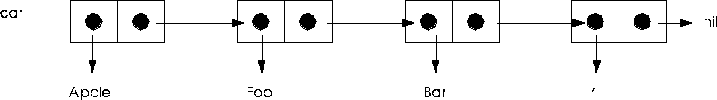
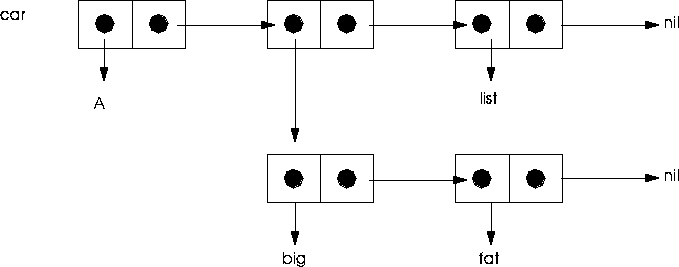

This chapter provides a brief overview of some of the most important Lisp concepts, including:
Xemacs includes an interface with the Allegro Common Lisp interpreter. This interface includes, among other things, several Xemacs menu items, as well as the Lisp prompt:
The Lisp Interpreter and Evaluation
USER(1):
For example, consider how to add the numbers 2 and 2. In Lisp you evaluate the form:
USER(2): (
USER(2): (+ 2 2)
4
(+ 2 2) => 4
Symbols are named data objects which serve to name functions and variables within programs. Internally, a symbol is a data structure with five components:
Symbols
USER(3): (
7
USER(4): x
7
USER(5): 'x
x
Packages are collections of Lisp symbols which serve as name spaces. They provide a handy way of preventing name conflicts when several developers are working on different pieces of a large project. Symbols within packages can be declared to be internal or external.
Packages
PackageA:foofunction
A Lisp form is an expression, enclosed within parentheses, which returns a value when evaluated by the Lisp interpreter. Forms can themselves contain other forms nested within them. Evaluation occurs from left to right. Evaluation for the form:
Forms and Evaluation
A function is any symbol which can be executed as code when supplied with the appropriate number and types of arguments. Functions accept arguments and return values. For example, the Lisp addition function + operates on arguments you supply:
Functions
USER(7): (+ 2 2)
4
USER(8): (setf x 9) ;Bind the symbol x to the value 9
9 ;Lisp returns the symbol value
USER(9): (+ x 1) ;Evaluate + with arguments x and 1
10 ;Lisp returns the result
USER(10): (+ 1 (+ 2 3))
6
(+ 2 3) returns the value 5, which is then supplied as an argument to the second form, (+ 1 5). Arguments supplied to a function from outside of that function are said to be passed from one function to another. In this example, the inner function passes it's result, 5, to the next function, which accepts it as an argument.
Functional programming is the dominant paradigm for Lisp programmers. Whereas other languages encourage you to use variables to store values, Lisp programmers focus on the return values of their functions. Setting global variables with
Evaluation, Side Effects,
and Functional Programmingsetf is generally frowned upon. For example, the following function relies on a variable to hold it's result:
(setf x (+ 2 2)) => 4
(+ 2 2) => 4
Defining Your Own Functions
You can define your own functions using the DEFUN macro, which has the following basic syntax:
(
For example, consider a simple function which sums 7 and 2:
USER(11): (defun add9() (+ 2 7) ;Define the function ADD9,
;with no argumentsadd9 ;Lisp returns the name of the
;function
USER(12): (add9)
9
USER(13): (defun add-two-nums (x y)
(+ x y))
ADD-TWO-NUMS
USER(14): (add-two-nums 3 4)
7
USER(15): (add-two-nums 3)
Error: ADD-TWO-NUMS got 1 arg, wanted 2 args.
[condition type: PROGRAM-ERROR]
A list is a series of linked cells called conses. A cons cell has two parts, called the car and the cdr. The origin of these seemingly obscure terms lies in the earliest days of symbolic programming. Lisp was developed for use on the IBM 704 mainframe (which used vacuum tubes!). This machine's memory was divided into several components, including the address register and the decrement register. Hence, CAR stems from "Contents of Address Register", and CDR from Contents of Decrement Register.
Lists
(Apple Foo Bar 1)
NIL, or the empty list. In other words, the last element of a list always has NIL as it's cdr. NIL and the empty list are symbolized by two empty parentheses, ().
You can visualize a this list as a chain of cons cells like this:

( A (BIG FAT) LIST)

Manipulating Lists
Lists are useful for managing sets of data. For instance, you can collect several discrete items into a list and pass them to a function as a single argument. You can also perform operations on each of the elements of a list in sequence, or search through a list and operate on those elements which meet certain criteria. Finally, lists can be useful for managing sequential data sets, since each element of a list has a pointer to the next element in the list in its cdr.
Creating a List
Lists are created in several ways. The list function accepts an unlimited number of arguments, which it returns as the elements of a new list. For example,
USER(16): (
(1 2 3 4 5)
cons function adds an argument as the first element of a list. For example:
(
(1 2 3 4 5)
append function:
(
(1 2 3 4 5 6)
(x)
Returning Elements of a List
You can return elements of a list by specifying their position using the nth function. For example, to return the fourth element of a list:
USER(181): (
4
Variables are symbols bound to values. In other words, they are symbols whose symbol-values are not undefined. Values are bound to symbols using the
Variablessetf function:
USER(182): (setf avariable 3223)
3223
Scope
Once bound, variables remain bound within certain programmatic constraints, called the scope of a variable. Scope is a fairly complex issue, but suffice to say that variables can have global scope or local scope. Global variables, once bound, remain bound within the confines of the program within which they were bound. Usually, variables with local scope are bound only within the confines of the form within which they were bound. For example, variables bound within a function remain bound only within the confines of that function. To use variables like these outside of a macro, you must use setf to bind them globally.
Setting Local Variables
You can use the let macro to create local variable bindings:
((your-code here))
let are only bound within the let form itself. For example, the variable z is defined in this function only within the confines of the let form::
(defun test-let (x y)
(
Nichimen Graphics has addressed the issue of typing in the interest of optimizing code for speed by creating several macros, called anti-generics, which essentially declare types for you in certain situations. To learn more about anti-generics, see "Optimizing Math with Anti-Generic Functions," on page 12-1
An array is a data structure whose elements are arranged in some Cartesian coordinate space. The rank of an array is equivalent to the number of dimensions it has. For example, a 5 x 5 element array is said to be of rank 5.
Arrays
Create arrays with MAKE-ARRAY:
(setf my-array (make-array '(5 5))
#2A((NIL NIL NIL NIL NIL)
(NIL NIL NIL NIL NIL)
(NIL NIL NIL NIL NIL)
(NIL NIL NIL NIL NIL)
(NIL NIL NIL NIL NIL))
aref function.
(aref my-array 2 1)
NIL
(setf (aref my-array 3 3) 'foo)
#2A((NIL NIL NIL NIL NIL)
(NIL NIL NIL NIL NIL)
(NIL NIL NIL NIL NIL)
(NIL NIL NIL FOO NIL)
(NIL NIL NIL NIL NIL))
A class is a data structure which controls the structure and behavior of other objects, which are it's instances. In other words, a class is a template of sorts, and instances are objects produced according to this template. Classes can inherit properties from other classes, and they can define properties which are inherited by other classes. Given a class,
ClassesFoo, subclasses of Foo are those classes which inherit properties from Foo, while superclasses are classes from which Foo inherits properties.
Classes inherit two major types of properties:
Slots
Slots are essentially storage spaces in an object which contain one and only one value. Slots can have:
:initarg, which provides default values for initialization when the class is instantiated.
:reader, which provides a function for retrieving the value stored in the slot
:writer, which provides a function for changing the value stored in the slot
:accessor, which combines both :reader and :writer functions.
Generic Functions
Generic functions are similar to regular functions, except that they know how to behave based on the nature of the arguments passed to them. For example, the generic function move has several methods, which behave differently when different instances of different classes are passed to them. If you pass a geobody to move, the geometry of that body is modified. If you pass an object, then the object is transformed.
Defining Classes
Let's define a few simple classes to illustrate the way that inheritance, generic functions, slots, and methods work. First, you define a class with the defclass form:
(
(sp:name-mixin sp:property-list-mixin)
((body :initform nil
:initarg :body
:accessor bird-body)
(beak :initform nil
:initarg :beak
:accessor bird-beak)))
bird. All instances of bird will inherit slots, generic functions, and methods from these classes. For bird, the precedence list includes sp:name-mixin and sp:property-list-mixin, which provide certain useful functions for our objects.
Now, we'll define a subclass of
bird, called song-bird:
(defclass song-bird
(bird)
((song :initform "Bye Bye Birdie"
:initarg :song
:accessor bird-song)))
song-bird has class bird in its precedence list, which means that instances of song-bird will have the same slots as class bird. This includes not only body and beak, but all the slots defined for the classes in birds precedence list as well, including sp:name-mixin and sp:property-list-mixin!
Class
song-bird also includes a new slot, song.
Instancing
Now, we'll make an instance of each of our new classes using the make-instance function.
(setq bird-obj (
:body 'fat :beak 'long-and-pointy))
Now, use the
describe function to examine the object we just created.
USER(35): (
#<BIRD MY-BIRD> is an instance of #<STANDARD-CLASS BIRD>:
The following slots have :INSTANCE allocation:
PROPERTY-LIST NIL
NAME MY-BIRD
BEAK LONG-AND-POINTY
BODY FAT
Manipulating Slot Values
Both of the slots we defined for class bird have accessor methods we can use to read and change the values in these slots. For example, to return the value of the body slot in our bird, use the get-body method:
USER(36): (bird-body bird-obj)
FAT
sp:name-mixin, we can use accessor functions defined for the slots of this class as well, including one which returns the name of the object:
USER(41): (sp:get-name bird-obj)
MY-BIRD
USER(73): (setf (bird-body bird-obj) 'a-fat-bird)
A-FAT-BIRD
bird-obj reveals the new value for the body slot:
USER(75): (describe bird-obj)
#<BIRD MY-BIRD> is an instance of #<STANDARD-CLASS BIRD>:
The following slots have :INSTANCE allocation:
PROPERTY-LIST NIL
NAME MY-BIRD
BEAK LONG-AND-POINTY
BODY A-FAT-BIRD
Defining Methods
Let's create methods for both our new classes. The following code defines two methods called hit-bird:
(defmethod HIT-BIRD ((self song-bird) new-song)
(setf (bird-song self) new-song))
(
(setf (bird-body self) new-body))
hit-bird. When called, hit-bird behaves differently depending on the type of object passed it. In the first case, passing an instance of class song-bird and an argument to hit-bird results in the value of the :song slot being replaced by the argument. In the second case, passing an instance of class bird and an argument to hit-bird results in the value of the body slot being changed to the value of the argument. In each case, the methods invoke the accessor functions for the slots in question to accomplish the change.
Inheritance of Slots and Methods
In our examples, song-bird is a subclass of bird. Therefor, methods and slots defined for bird are also defined for song-bird. To illustrate this concept:
1. Create an instance of each class
USER(94): (setq bird-obj (make-instance 'bird))
#<BIRD NIL 435420666>
USER(95): (setq song-bird-obj (make-instance 'song-bird))
#<SONG-BIRD NIL 435437210>
USER(110): (setf (get-body bird-obj) 'a-fat-bird)
A-FAT-BIRD
USER(113): (setf (get-body song-bird-obj) 'a-fat-song-bird)
A-FAT-SONG-BIRD
USER(121): (describe bird-obj)
#<BIRD NIL 435420666> is an instance of #<STANDARD-CLASS BIRD>:
The following slots have :INSTANCE allocation:
PROPERTY-LIST NIL
NAME NIL
BEAK NIL
BODY A-FAT-BIRD
USER(122): (describe song-bird-obj)
#<SONG-BIRD NIL 435437210> is an instance of #<STANDARD-CLASS SONG-BIRD>:
The following slots have :INSTANCE allocation:
PROPERTY-LIST NIL
NAME NIL
BEAK NIL
BODY A-FAT-SONG-BIRD
SONG "Bye Bye Birdie"
Copyright © 1996, Nichimen Graphics Corporation. All rights reserved.